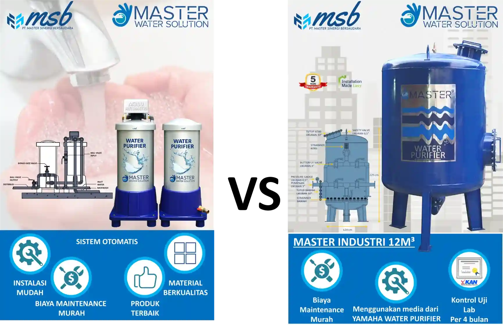

Perbandingan Filter Air Master
Temukan produk filter air terbaik untuk kebutuhan rumah tangga hingga industri.
Perbandingan Filter Air Master: Mana yang Terbaik untuk Rumah, Hotel, atau Industri?
Air bersih adalah kebutuhan vital dalam kehidupan sehari-hari—baik untuk rumah tangga, bisnis kuliner, hotel, hingga skala industri...

Tabel Perbandingan Produk Filter Air Master
| Spesifikasi / Fitur |
M300 Manual |
M300 Automatic |
M300 SC |
Filter Air Industri (4–20m³) |
| Kapasitas | ±1.000 liter/hari | ±1.000 liter/hari | ±1.000 liter/hari | 4.000 – 20.000 liter/hari |
| Jumlah Tabung | 2 Tabung (karbon + pasir) | 2 Tabung (karbon + pasir) | 1 Tabung (karbon aktif) | 2–3 Tabung skala besar |
| Sistem Operasi | Manual | Otomatis | SC = Super Compact | Manual / Otomatis |
| Media Penyaring | Pasir silika + karbon aktif | Pasir silika + karbon aktif | Karbon aktif | Pasir silika, karbon, mangan, dll. |
| Ukuran | Sedang | Sedang | Ringkas | Besar |
| Maintenance | Backwash manual | Minim perawatan | Minimal maintenance | Perlu teknisi |
| Cocok untuk | Rumah | Usaha kecil | Dapur/kosan | Hotel, pabrik |
| Harga | Mulai Rp3jt | Mulai Rp4,5jt | Mulai Rp3,5jt | Custom |
M300 Manual: Solusi Ekonomis untuk Rumah Tangga
Filter Air M300 Manual adalah pilihan ideal bagi Anda yang menginginkan filter air berkualitas dengan harga terjangkau...
M300 Automatic: Kemudahan dalam Satu Tekanan Tombol
Filter Air M300 Automatic dirancang untuk pengguna yang ingin kenyamanan lebih...
M300 SC (Super Compact): Ringkas dan Efisien
Filter Air M300 SC adalah pilihan terbaik untuk ruang terbatas...
Filter Air Industri: Solusi Besar untuk Kebutuhan Besar
Untuk kebutuhan skala besar seperti hotel dan pabrik, Filter Air Industri kami adalah solusi tepat...
Mana Filter Air Terbaik? Ini Jawaban Berdasarkan Kebutuhan Anda
- Rumah tangga → M300 Manual / Automatic
- Dapur, kosan → M300 SC
- Restoran, laundry → M300 Automatic
- Hotel, pabrik → Filter Air Industri
Tips Memilih Filter Air Berdasarkan Sumber Air Anda
Pahami dulu sumber air Anda, lalu sesuaikan dengan sistem filtrasi yang tepat...
FAQ Seputar Perbandingan Filter Air Master
- Q: Bisa upgrade dari M300 Manual ke Automatic? A: Bisa, tersedia upgrade kit.
- Q: Umur media penyaring? A: Sekitar 1 tahun tergantung pemakaian.
- Q: Apakah bisa untuk air minum? A: Perlu tambahan RO/nano filter.
Konsultasi Gratis Sebelum Beli
Hubungi kami via WhatsApp atau jadwalkan survey gratis...
Cek Juga Produk Terkait
Penutup
Setiap jenis filter air memiliki keunggulan dan karakteristik masing-masing. Penting untuk memahami kebutuhan spesifik air di rumah, bisnis, atau industri Anda sebelum memilih produk. Dengan memahami perbandingan filter air Master secara menyeluruh, Anda bisa menghemat waktu, biaya, dan memastikan hasil penyaringan air yang optimal.
Jangan ragu untuk menghubungi tim Filter Air Master jika masih bingung memilih produk. Kami siap membantu melalui konsultasi gratis dan survey langsung ke lokasi Anda.
💬 Klik di sini untuk konsultasi via WhatsApp: +62 812-1122-3344